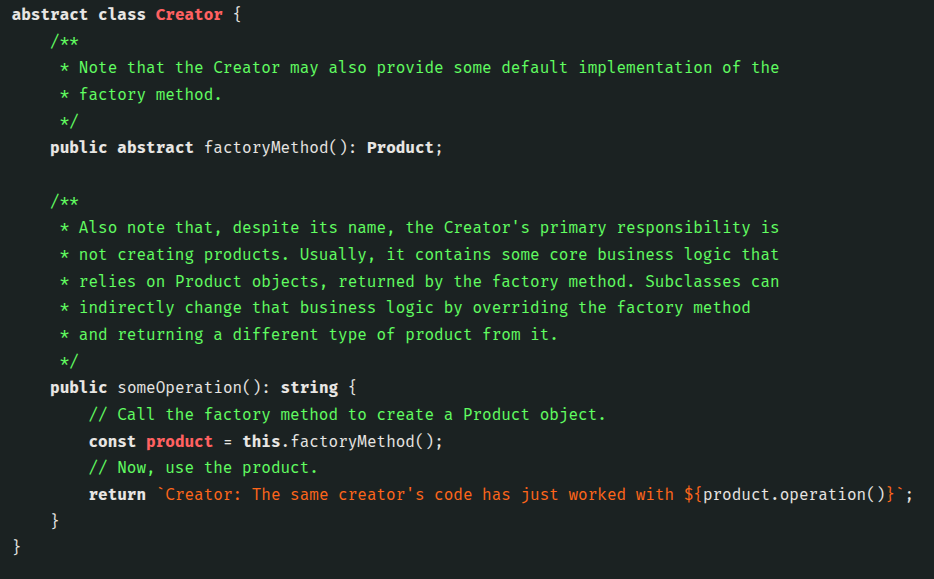
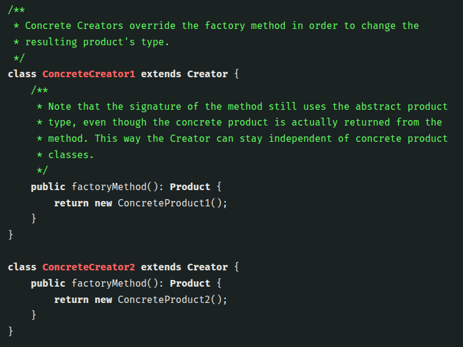
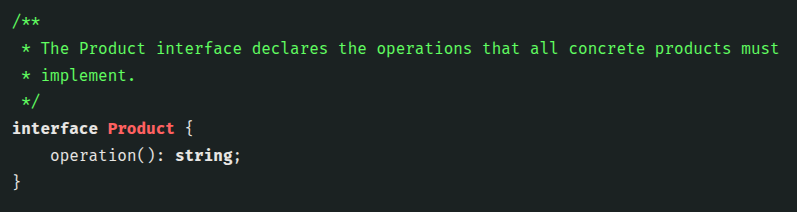
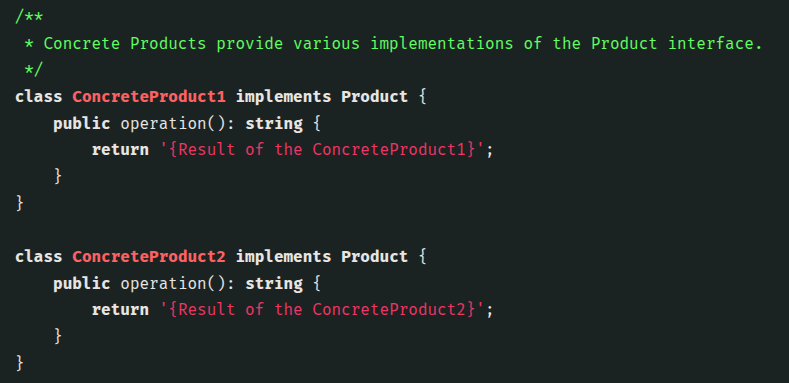

Factory Method
The Factory Method is a design pattern used to create objects without
specifying the exact class that will be instantiated. Instead of calling a
constructor directly, you call a factory method. This lets a class
delegate the creation logic to subclasses or specialized methods, making
the code more flexible and easier to extend. In short, it helps you
decouple object creation from object usage, so adding new types doesn’t
require changing existing code.



